개인 프로젝트
2020년 2분기


소설의 컨셉아트를 그리기 위해 자료를 모으고, 컨셉아트의 초안을
제작하였습니다.
결과물로 제작한 e-book에는 소재가 된 소설의 내용과 조사한 자료 등이 있었으며, 연습한 그림들과 소설 컨셉아트의 초안이 있었습니다.
그러나, 제대로된 학습없이 작업하였기에 결과물의 내용이 부실하였습니다.
가장 중요한 '컨셉아트에 대한 학습'이 하나도 이루어지지 않았고 결과물 제작을 게을리한 결과, 원화의 초안은 낙서나 다름없었습니다.
결과물로 제작한 e-book에는 소재가 된 소설의 내용과 조사한 자료 등이 있었으며, 연습한 그림들과 소설 컨셉아트의 초안이 있었습니다.
그러나, 제대로된 학습없이 작업하였기에 결과물의 내용이 부실하였습니다.
가장 중요한 '컨셉아트에 대한 학습'이 하나도 이루어지지 않았고 결과물 제작을 게을리한 결과, 원화의 초안은 낙서나 다름없었습니다.
2020년 3분기
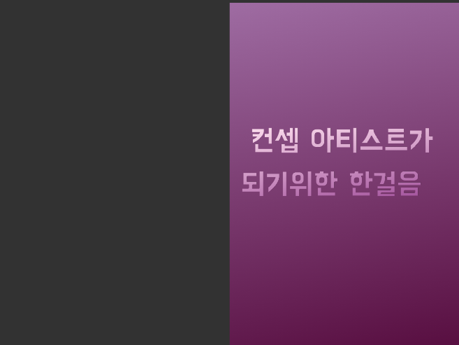
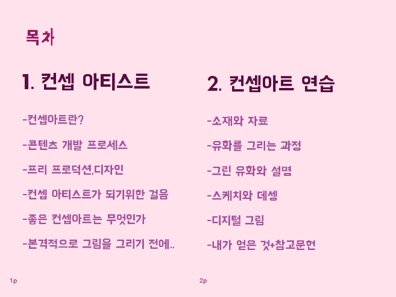
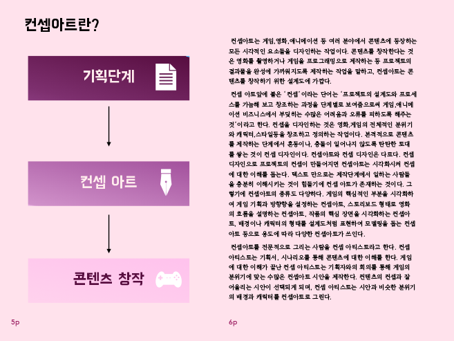
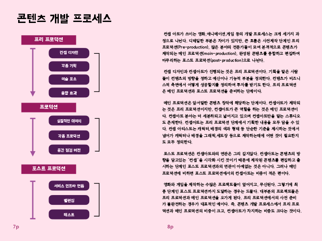
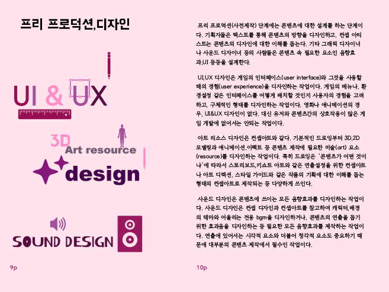
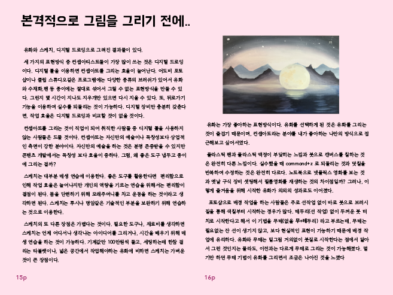

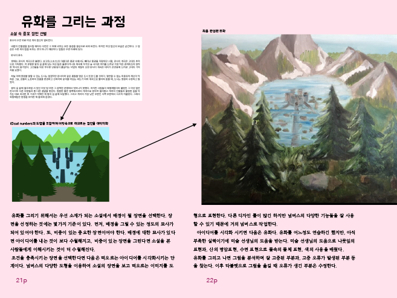
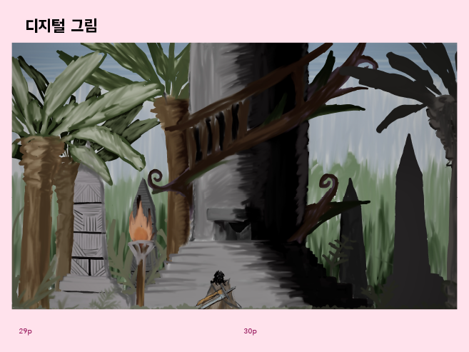
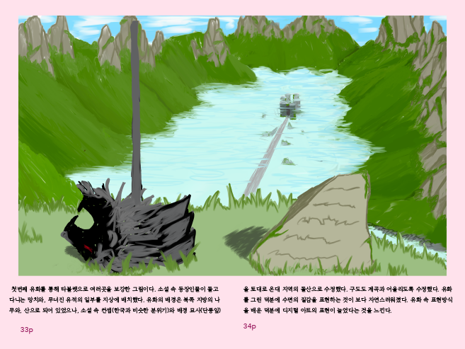
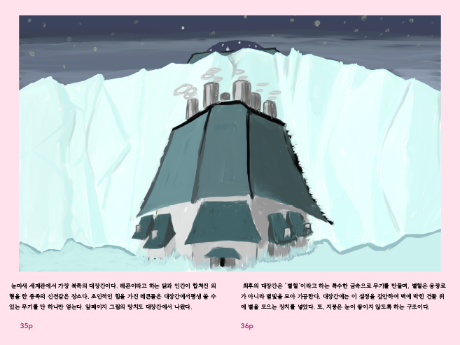
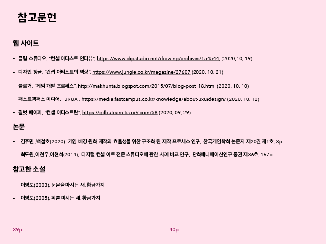
보다 좋은 컨셉아트를 그리기 위해 학습하고, 직접 컨셉아트를
그렸습니다.
논문과 같은 전문적인 자료를 통해 내용의 깊이가 더해졌고, 결과물의 완성도를 높였습니다.
그림 실력의 부족으로 컨셉아트 자체의 수준은 높지 않았지만
결과물을 만들기 위해 탄탄하게 학습하는 방법을 배웠습니다.
논문과 같은 전문적인 자료를 통해 내용의 깊이가 더해졌고, 결과물의 완성도를 높였습니다.
그림 실력의 부족으로 컨셉아트 자체의 수준은 높지 않았지만
결과물을 만들기 위해 탄탄하게 학습하는 방법을 배웠습니다.
2020년 4분기
수업
2020년 3분기


열대화라는 사회 현상을 해결하기 위해
기초상식들을 배우고, 추가로 필요한 자료들을 모아 잡지를 제작하였습니다.
팀원과의 논의 끝에 미성년자인 팀원들이 열대화를 해결하기 위해 어떤 것을 할 수 있을지 알아냈습니다.
위 활동을 통해, 체계적인 계획을 세워 학습하고 성과를 만드는 방법에 대해 배웠습니다.
기초상식들을 배우고, 추가로 필요한 자료들을 모아 잡지를 제작하였습니다.
팀원과의 논의 끝에 미성년자인 팀원들이 열대화를 해결하기 위해 어떤 것을 할 수 있을지 알아냈습니다.
위 활동을 통해, 체계적인 계획을 세워 학습하고 성과를 만드는 방법에 대해 배웠습니다.
2020년 4분기

html,css,js를 학습하고 팀 프로젝트를 소개하는 웹페이지를
제작하였습니다.
페이지 제작을 위해 기획한 기능들을 기간안에 모두 구현하기 위해 계획을 세우고 제작을 진행했습니다.
탄탄하게 기획하고 실행하는 것으로 완성도 높은 결과물을 제작하였습니다.
페이지 제작을 위해 기획한 기능들을 기간안에 모두 구현하기 위해 계획을 세우고 제작을 진행했습니다.
탄탄하게 기획하고 실행하는 것으로 완성도 높은 결과물을 제작하였습니다.
2021년